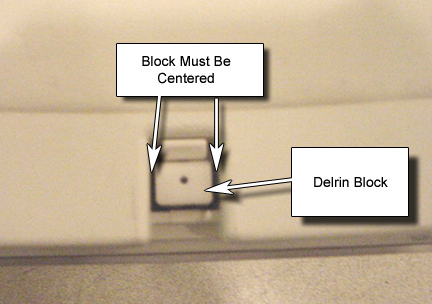

Operating Documentation
Direction 5440001-3, Rev# 6
Signa HDxt Service Methods
Module Version 1.0, Version Date 5/15/07
Operating Documentation |
As shown in Illustration 1, with the table undocked and moved from magnet, visually check that the Delrin Block is centered in the slot made by the cradle plate.
Illustration 1: Delrin Block Centering

Refer to Cradle Release Block Adjustment if adjustments are needed.